【17M-RFT28】ADELA
「Por que desperdiçar esforços? De qualquer forma, a vitória deve pertencer a mim no final」
【Ocupação】campeã mundial de xadrez
Como o campeã mundial de xadrez. Há apenas vitória diante dela.
A palavra "fracasso" não está em seu dicionário.
Ela é sempre capaz de prever o próximo passo e executá-lo com perfeição.
Normalmente seu ritmo é sempre lento, às vezes até impaciente.
Mas quando o jogo começar, ela se concentrará no jogo, como se tivesse mudado. Ela gosta de pensar e planejar tudo, principalmente quando as estratégias táticas e os julgamentos precisos de decisão que ela formula a fazem vencer o jogo, o que a deixa ainda mais empolgada.

【17M-RFT29】ADRIANA
「Está meio frio... Onde coloquei aquele fósforo?」
【Ocupação】Incendiária
Chamas brilham onde quer que ela vá. Ela é criminosa de uma série de incêndios que atingiram todo o país do México com terror.Ela atira fogo em prédios e fábricas vazios, com um cano na boca. Ela costuma falar gentilmente com o céu vazio ou chamar o nome de alguém. Com quem ela está falando?

【21M-RFT50】AIDEN
「A vida não deve ser fácil para todos.」
【Ocupação】Mercenário
Um mercenário sem passado.Ele desapareceu há 8 anos após uma tentativa de recrutá-lo, e três membros do Esquadrão Especial morreram no incidente. Encontramos registros mencionando que ele trabalhava como mercenário desde então, mas os detalhes de suas atividades estão faltando.
De acordo com a pouca documentação que lutamos para descobrir, diz que a equipe que ele liderava voltou viva de qualquer missão.

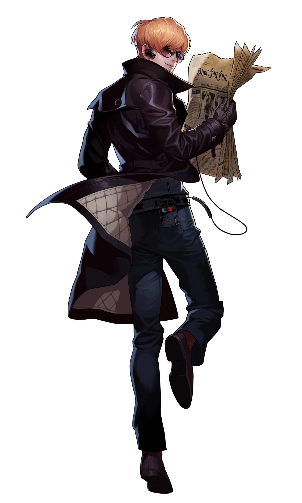
【14M-RFT13】ALEX
「Possuir a verdade revela o mistério chamado futuro」
【Ocupação】espião
Proficiente em 6 idiomas, bom em operar todos os tipos de armas. Ele parece gostar de jogar Tetris. Ao contrário de sua excelente habilidade física, sua aparência sempre parece ruim. Todo o resto é desconhecido.
【14M-RFT24】ARDA
「as pessoas sempre deixam rastros」
【Ocupação】estudante graduado
Um estudante de pós-graduação em uma universidade conduzindo pesquisas com um professor respeitado. Ele defendeu a professora e a defendeu quando ela foi acusada de falsificar os artefatos arqueológicos que ela escavou. Mas ele também foi gradualmente influenciado pelas acusações de outras pessoas e, finalmente, ouviu rumores e questionou seu professor.Então, quando a inocência do professor foi finalmente provada, ele começou a ter uma profunda desconfiança de "acreditar". Embora muitas vezes ele tenha uma cara séria e inexpressiva, é que ele não expressa suas emoções em seu rosto. Ele é frequentemente visto bebendo bebidas refrescantes em xícaras de chá.
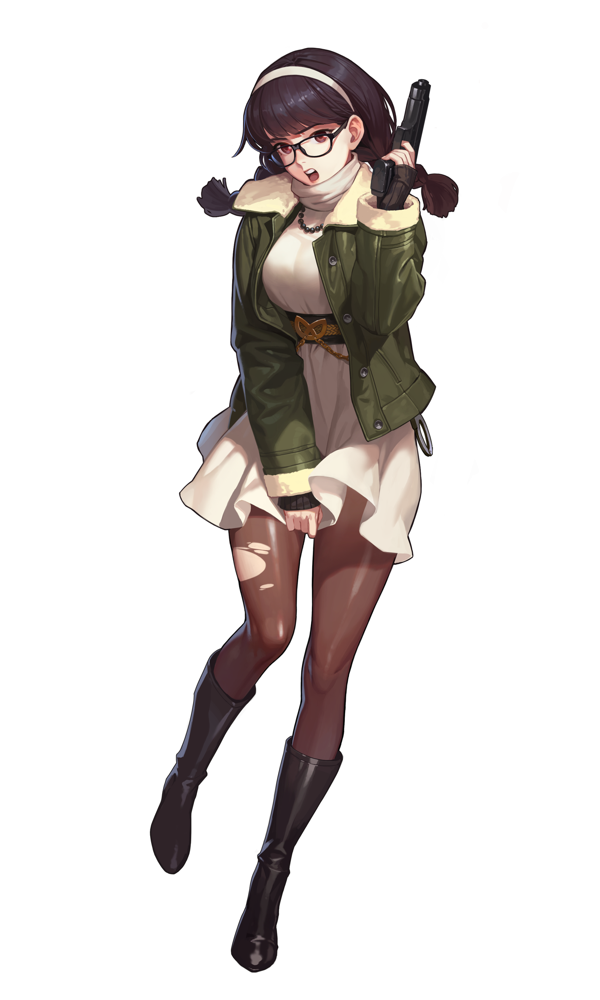
【14M-RFT11】AYA
「Pela minha luz, pela minha justiça.」
【Ocupação】Policial
Ela se tornou policial apenas com base em seu desejo de justiça. Mas ela está tendo dúvidas sobre seu trabalho depois que sua família se envolveu em um caso de assassinato. Ao mesmo tempo, ela ficou mais obcecada com a justiça do que começou a pensar que é a única pessoa que pode trazer justiça ao mundo.Ela é repulsiva ao ver o cadáver. Quando ela ocasionalmente tem que inspecionar cadáveres de animais, isso coloca um estresse severo nela. O nome do irmão dela é Suzuki Hikaru. Ele perdeu as duas pernas.
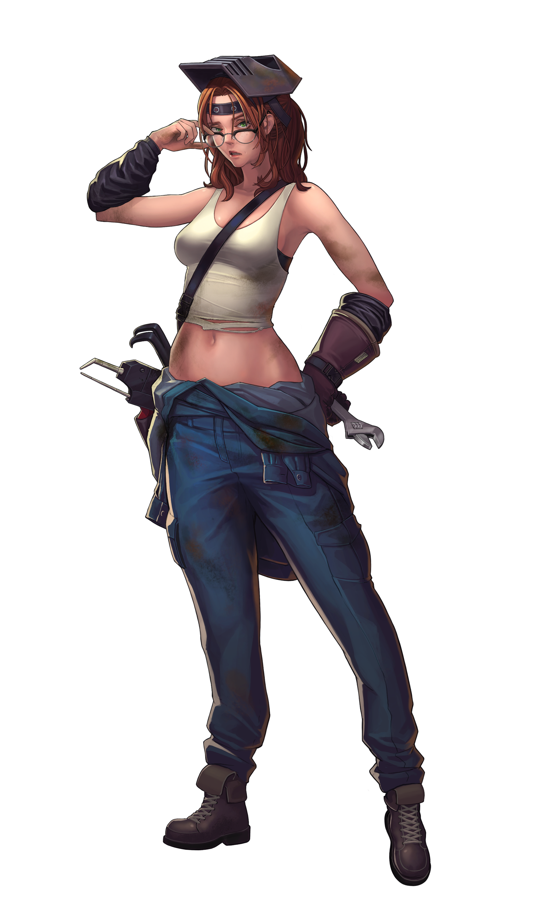
【16M-RFT15】BARBARA
「Vocês são todos ignorantes sobre o brilho da minha invenção.」
【Ocupação】Geek
Ela sempre sonhou em se tornar engenheira, mas acabou na faculdade de medicina por causa da pressão da família. Depois que seus pais morreram, não havia ninguém para interferir em seu trabalho e ela se concentrou em fazer seu próprio robô por 15 anos. Infelizmente, logo após a conclusão, ela ficou sem fundos e seu robô ficou incompleto.
Ela tem sede do reconhecimento dos outros, por isso fica facilmente animada quando elogiada um pouco. Trancar-se em sua casa por 15 anos a deixou sem contato.

【16M-RFT26】BERNICE
「Meu objetivo sempre aponta para vermes, distantes do humano.」
【Ocupação】Caçador
Um caçador, vivendo isolado da civilização. Normalmente, ele se importa com o gado ou caça para viver. De vez em quando, ele cuidava dos animais que poderiam prejudicar as pessoas ou afugentar os caçadores. Ele gostava de uma mulher uma vez na juventude, mas ela já estava noiva e ele não queria fazer rumores sobre 'fazer amor com homem estrangeiro' para tornar sua vida miserável. Então ele deixou a vila por conta própria.
Ele não bebe, pois perde o controle sobre si mesmo, mas fumava muito. Durante sua juventude, por apenas uma vez, ele perseguiu um homem.

【20M-RFT45】BIANCA
「Mal posso esperar para provar seu sangue.」
【Ocupação】Estudante do ensino médio
Ela se considera uma vampira. Ela usa um guarda-chuva, alegando que o sol pode queimá-la. Ela veste roupas góticas e fala como uma velha nobre. Todo mundo, incluindo sua família, pensava que ela estava interpretando.Mas um dia, havia uma nota em seu quarto, dizendo que ela não seria capaz de voltar para casa por um tempo, junto com sacos de sangue de origem misteriosa.
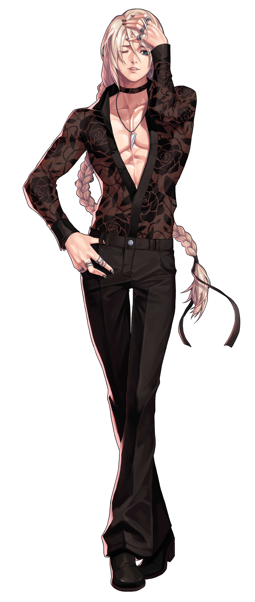
【16M-RFT25】CAMILO
「Até uma flor perde sua beleza, na sua frente.」
【Ocupação】Ballerino
Ele é um dançarino sempre chamando a atenção com sua beleza e poses impressionantes . Sua beleza é igualada por seu talento em dança, reconhecido até pela Royal Arts Academy. Ele está ciente de sua beleza e talento extraordinários e gosta de ter seu charme e beleza validados por outras pessoas. Sua visão de mundo é totalmente egocêntrica, então ele é sempre brutalmente honesto com seus sentimentos e, especialmente, não se importa com a dor ou tristeza de outras pessoas. Ele sempre carrega uma rosa, mas ninguém sabe de onde ele a tirou.Palavras de beleza como "Elegante!" "Hermoso!" "Bonito!" sempre pode ser ouvido perto dele.
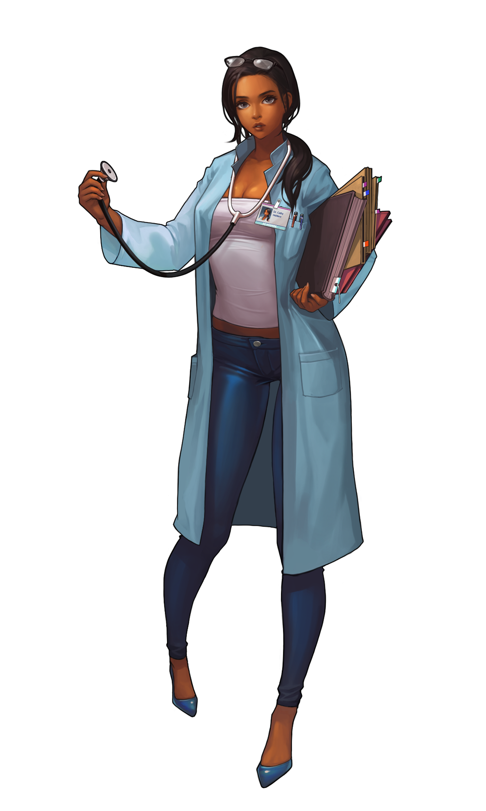
【14M-RFT14】CATHY
「Sangue e cadáveres são meus campos de especialização.」
【Ocupação】Doutora
Sua natureza gentil e sentimental é problemática, pois a envolvem demais com seus pacientes. Ela foi demitida devido a várias práticas médicas decorrentes de sua simpatia desnecessária. Atualmente, ela está administrando um médico gratuito apoiado pelos moradores locais para mal ganhar seu pão diário.
Eles sabem que ela é gentil, mas também um pouco estranha. Então, quando a doença fica grave, eles visitam um hospital maior.


【21M-RFT48】CELINE
「Não há nada que uma explosão não possa resolver.」
【Ocupação】Técnica EODa
Quem poderia dizer o que está na mente deste técnico de EOD? Ela tem uma maneira peculiar de pensar, o que a torna difícil de prever. Ela é indiferente a qualquer coisa que não se relacione com bombas ou explosões. Ela fazia parte da equipe de descarte de ordenanças explosivas. Depois de receber alta, ela desapareceu durante o tratamento com TEPT.
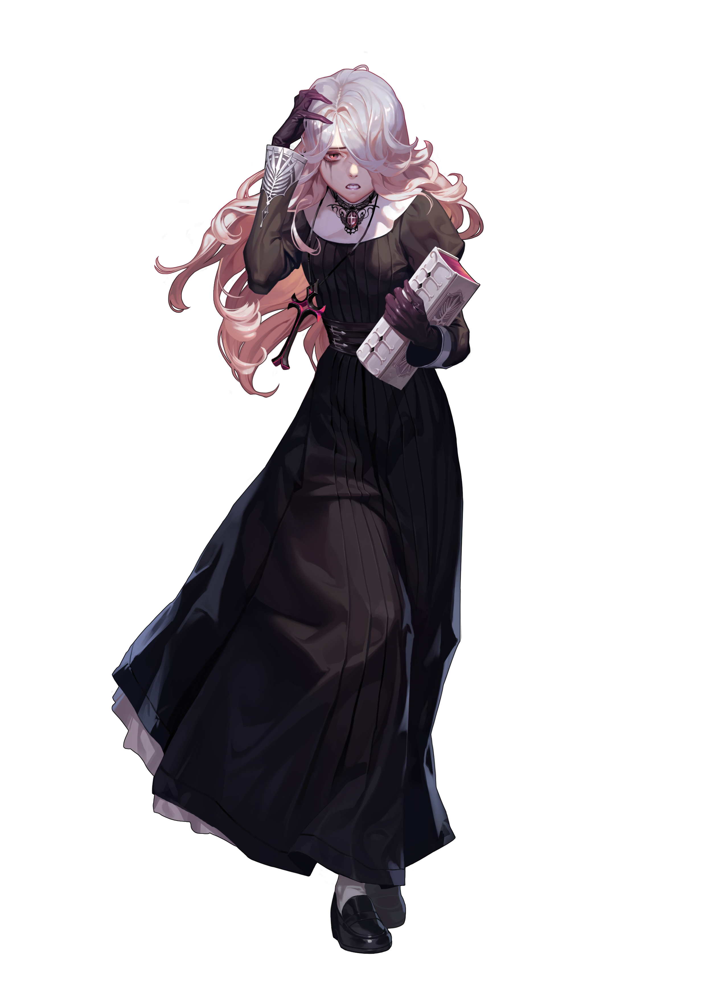
【16M-RFT21】CHIARA
「Acabou... Nada mais pode me salvar...」
【Ocupação】Freira
Quando ela nasceu, ela foi enviado para um mosteiro católico fechado, onde sofreu uma lavagem cerebral todos os dias de que Deus é onisciente e onipotente.Quando ela finalmente foi autorizada a deixar o mosteiro para pregar, ela acreditava firmemente que estava protegida por Deus, então ela foi para a cidade com a lei local mais perigosa e ordem para pregar, e finalmente foi sequestrada.
Durante aqueles longos dias no mercado de tráfico humano, ela foi forçada a fazer o que considerava sujo e degradante. Ela gradualmente desenvolveu a ideia de questionar a Deus, o que também a fez sentir-se fortemente enojada com seu eu corrompido. Sempre que ela vê algo belo e puro, isso a faz cair em si mesma

【20M-RFT46】CHLOE
「Você viu minha marionete se movendo? Esquisito.」
【Ocupação】Marionetista
Uma marionetista bem-comportada que sempre tem um sorriso brilhante no rosto.Ela aborda as pessoas de maneira gentil, como se fossem crianças pequenas e as faz baixar a guarda com suas habilidades sociais extremas. As pessoas pensam nela como uma pessoa de bom humor, pois ela nunca mostra ou expressa sentimentos negativos, como raiva ou frustração.
No entanto, ela pode mostrar suas cores verdadeiras quando fala com sua marionete 'Nina'.

【19M-RFT40】DANIEL
É necessário um alfinete afiado para empalar as asas de uma borboleta na parede.
【Ocupação】Cabeleireiro
Ele é um cabeleireiro de cabelos compridos que é muito proficiente em expressar sua estética com uma tesoura.
Ele geralmente não pergunta a seus clientes sobre o penteado desejado. Ele é capaz de visualizar o olhar acabado em sua cabeça, apenas com base em sua primeira impressão, e se concentra até realizar o visual. Os penteados e a aparência que ele cria sempre mantêm sua beleza por um longo tempo. Os clientes geralmente se sentem desconfortáveis com sua falta de hospitalidade, mas suas habilidades são tão impecáveis que acabam concedendo.
Um dia, ele disse que era urgente refazer o cabelo de um cliente e pediu para trabalhar fora do salão. Ele arrumou seus pertences pessoais e foi embora, mas nunca mais voltou. Segundo um de seus colegas da lista de cabelo, ele deixou o salão com uma expressão de raiva.

【14M-RFT44】ECHION
「Você precisa de um motivo para lutar? Somente idiotas encontram razões.」
【Ocupação】Desconhecido
Ele corre para o inimigo na frente dele sem hesitar. Parece que ele nasceu apenas para lutar.
Ele pode não ter inteligência para elaborar uma estratégia, mas é capaz de suprimir seu inimigo com excelentes reflexos e habilidades de combate.
Ele esqueceu seu nome verdadeiro, sua nacionalidade e o resto de sua identidade. Ele não sabe como perdeu o braço e quando ganhou o braço protético. A única coisa que ele sabe é lutar contra o que está à sua frente, conforme solicitado por alguém que deu seu nome. Devido à sua perda de memória, ele não possui habilidades de comunicação e bom senso e confunde quem o conhece pela primeira vez.


【22M-RFT52】ELENA
「Este lugar será inverno em breve.」
【Ocupação】Patinadora
Uma patinadora júnior renomada!! Sua aparência nobre, elegância e personalidade forte atraíram muita atenção do público, mas sua vida foi derrubada após a perda de seu pai.Ela foi relatada como desaparecida devido a problemas de herança familiar.
.png)
.png)
【19M-RFT39】ELEVEN
「Você não se sente ótimo depois de uma boa refeição?」
【Ocupação】Streamer
Ela opera um canal de transmissão de streaming chamado < Décima Primeira Tabela >
Ela geralmente se transmite comendo e elogiando todos os alimentos que come. Ela tem um fandom composto por fãs apaixonados por causa de sua voz brilhante e fofa, várias reações divertidas e uma atitude de sempre fazer o seu melhor. Um de seus vídeos mais populares é ela comer 89 sabores diferentes de macarons que encheram todo o quarto. Ela também se dedica a revisar os alimentos de rua depois de experimentar o yóutiáo ( 代 ) e ficou impressionada com o sabor.
Desde que sua identidade como filha única de um CEO rico foi revelada recentemente ao público, ela não enviou nenhum novo conteúdo em seu canal.
.png)
.png)
【18M-RFT38】EMMA
「Vou lhe mostrar uma coisa completamente nova!」
【Ocupação】Mágica
Ela sempre realiza truques de mágica gratuitos na rua com cartões, moedas e até chapéus, mas sua especialidade é fazer truques de cartas.
Seu público a chama de 'Begi Emma', uma palavra derivada de Beginner. Embora ela possa estar muito alta quando ri ou fala, ela é facilmente acessível e amigável, e é difícil odiá-la.
Ela seguiu sua carreira mágica assim que se tornou adulta e sempre quis viver livremente das regras estritas de seus pais. Há rumores de que ela saiu de casa para se tornar uma grande mágica, a fim de encontrar seu avô.

【02M-RF42】EVA
「Eu só queria viver uma vida normal. Eu não sabia o quão difícil era conseguir isso.」
【Ocupação】Estudante do ensino médio
Sempre que alguém falava com ela, ela sorria gentilmente e respondia de tal maneira que nada sobre si mesma fosse revelado. Há algo de misterioso e secreto nela.
Seus receptores de dor são insensíveis, então ela costuma esbarrar em coisas e quedas. Ela não percebe seus machucados e feridas. Ela pode parecer frágil devido à sua petitude, no entanto, ela possui um poder que todos temeriam.

【22M-RFT53】FELIX
「Deixe-me saber se há algo que eu possa fazer para ajudar.」
【Ocupação】Balconista
Um funcionário do supermercado durante o dia e um herói do beco à noite.
Ele nunca pode deixar alguém em apuros sozinho e, com sua personalidade brilhante e animada, ele sempre tenta ajudar as pessoas necessitadas. Embora ele seja apenas um estudante em licença para pagar seus empréstimos, ele é o que os outros podem chamar de 'herói'. Talvez seja por isso que ele guardou os becos com uma lança, limpando todas as quadrilhas de traficantes que contaminavam a área.
Um dia, enquanto invadia uma quadrilha de narcotráfico, ele desapareceu de repente depois de dizer que precisava salvar mais pessoas.
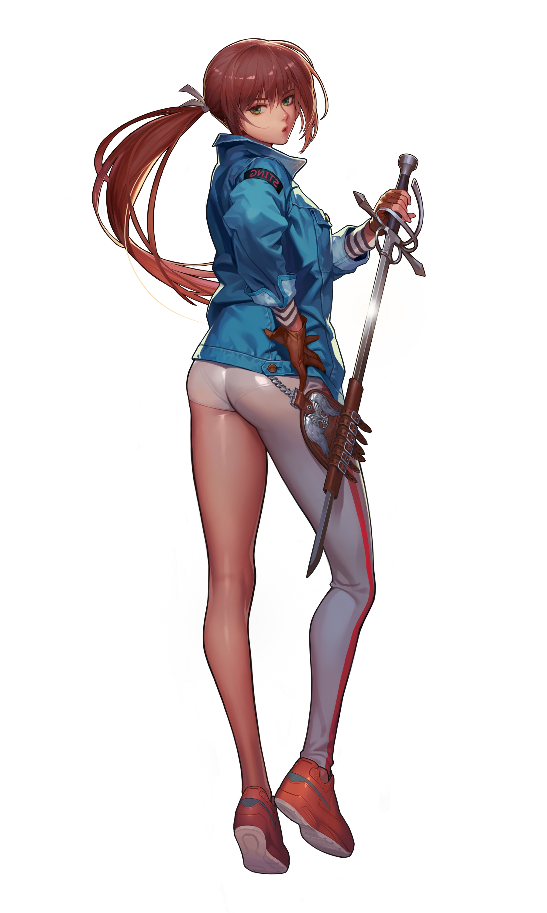
【14M-RFT02】FIORA
「Cintura! Pescoço! Sua postura é uma bagunça!」
【Ocupação】Esgrimista
Uma excelente jogadora de esgrima. Sua família influenciou sua postura direta e o orgulho. O pai dela era tão tacanho que ele pensava que as mulheres eram para servir chás da tarde. Ela começou a esgrima como uma rebelião contra o pai e seu desejo de ser reconhecido por ela.
Ela era boa em matemática na escola. Ela deseja proteger qualquer pessoa mais fraca que ela, mas deseja ser reconhecida por quem é mais forte que ela


【16M-RFT22】HART
「paz e amor?」
【Ocupação】Guitarrista
Ela foi movida pela crença de que o amor e a música poderiam mudar o mundo e se apaixonou pelo rock and roll desde então. Sua orquestra é bem conhecida em todo o mundo e foi convidada por muitas corretoras. Mas Hart recusou esses convites porque ela não seria capaz de tocar a música que queria.Porém, outros integrantes da banda, que sofriam com a pressão da realidade, assinaram contratos sem o conhecimento dela. Ela ficou chocada com a traição de seus companheiros. Para provar que estava certa, ela se tornou mais persistente em sua ideia de usar a música para mudar as pessoas.
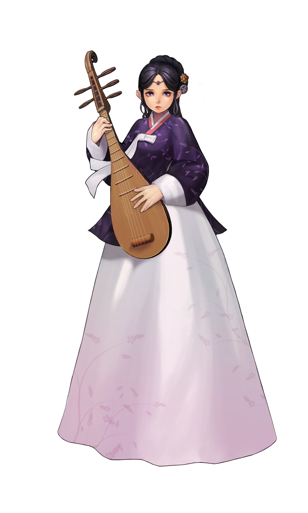
【14M-RFT12】HYEJIN
「Este deve ser outro caminho fadado.」
【Ocupação】xamã
Ela é a único filha da família xamã hereditária. Seu destino de nascimento, se ela nascesse após o amanhecer, teria sido uma vela suave. Mas como ela nasceu antes do amanhecer, seu destino ditava que ela passaria por uma grande provação aos 18 anos para levar uma vida tranqüila. Ela parece aceitar seu destino como é. Devido à sua formação familiar, ela é uma forte fatalista.Sua história favorita no livro é "Destino implacável". Ela costuma interpretar Bipa, um alaúde coreano para se comunicar com spiri ... para ser franco, parece que ela está murmurando para si mesma.
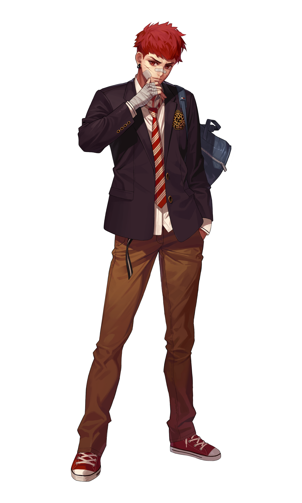
【14M-RFT04】HYUNWOO
「as coisas não podem piorar」
【Ocupação】Estudante do ensino médio
Hyun Woo nunca alimentou sonhos ou esperanças. Tudo o que posso sentir sobre o futuro é ansiedade e inquietação. Para fugir do medo do futuro, tudo o que ele pode fazer é encontrar constantemente pessoas para lutar e arrancar, apenas para perseguir a emoção momentânea e viver o presente.No entanto, não importa o quanto ele se enganasse, a ansiedade em seu coração ainda permanecia e espreitava nas profundezas de seu coração. O que eu mais quero fazer quando for adulto é comprar um bilhete de loteria abertamente. Ele valoriza seus melhores amigos mais do que sua família.
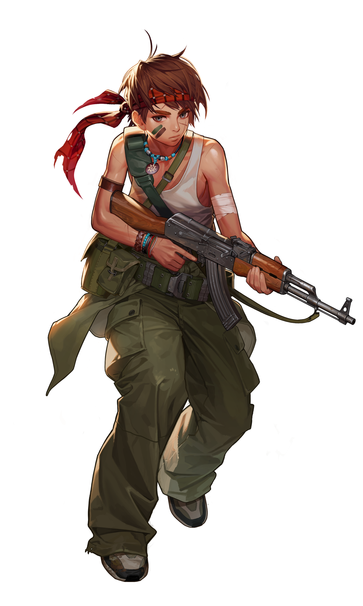
【15M-RFT16】ISOL
「Não pode parar por aqui.」
【Ocupação】Guerrilheiro
Seu nome era Marcelo quando ele estava em um orfanato e viveu lá até os 12 anos.Ele escapou do orfanato por sugestão de seu amigo de confiança Francisco. Depois, ele se juntou ao grupo terrorista MOK. Isol é a única criança sobrevivente entre as crianças que se juntaram ao grupo na época.
Ele tende a usar uma maneira desnecessariamente cruel de matar. Ele está muito desinteressado em aprender sobre os outros, pois odeia desnecessariamente um relacionamento íntimo crescente com os outros.
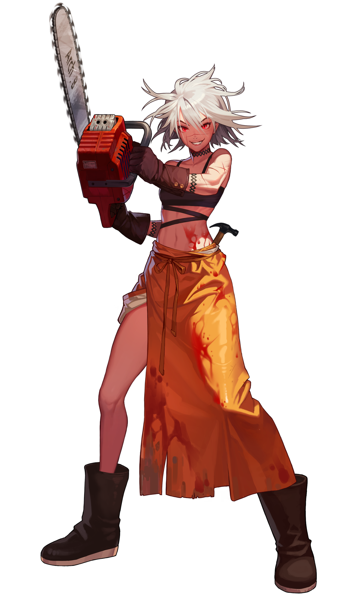
【06M-RF01】JACKIE
「Mais...mais...mais!!」
【Ocupação】Assassina em série
Seu primeiro assassinato foi uma esposa e uma filha da família Winslair, proeminente na política. Ela é uma serial killer que matou mais de 30 pessoas. Ela ganhou o apelido de 'Quilt' porque ela rasga o corpo das vítimas em pedaços pequenos depois de matá-los. As peças eram muito pequenas para identificá-las, a menos que todas as peças fossem colocadas juntas como uma colcha. Ela é conhecida por seus métodos cruéis de matar e limpezas meticulosas.Angela Winslair foi a primeira vítima de Jackie e seu corpo nunca foi encontrado.
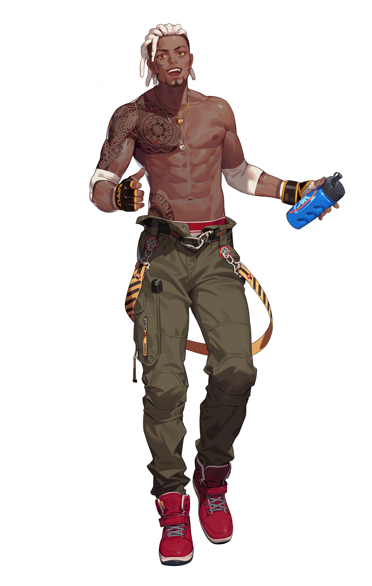
【18M-RFT35】JAN
「Vamos jogar de verdade!」
【Ocupação】Kickboxer
Um atleta kickboxer, que adora humor e tem uma personalidade alegre. Ele também é avaliado por muitos de seus fãs por suas atividades voluntárias.Ele é o primeiro entre dois filhos de um famoso atleta muay tailandês. Ele começou a praticar Muay Thai com seu irmão mais novo enquanto estava no exterior, mas se envolveu em um incidente violento e sua educação foi interrompida no meio do caminho. Ele foi chamado de volta à Holanda por seu pai depois. Embora ele tenha habitado em seu passado e tenha recorrido à toxicodependência após o incidente, ele estava determinado a vencer e, eventualmente, estreou como kickboxer.
Apesar de constantemente rir e fazer piadas, quando ele começar a lutar, ele não parará de se enfurecer com seu oponente. Sua combinação de intermináveis ataques rápidos e pesados, definitivamente tornará seu oponente incapaz de escapar.
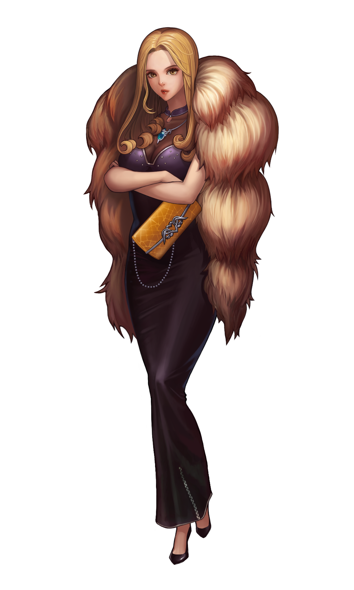
【14M-RFT07】JENNY
「As jóias realmente brilham apenas na mão digna.」
【Ocupação】Atriz
Ela cresceu em uma família comum. Não é pobre e não é rico, não tem sorte e não é infeliz. Era o mais medíocre possível, e ela odiava essa mediocridade.Jenny estava muito confiante sobre seu potencial de se tornar uma Superstar. Infelizmente, ela não ficou famosa como esperado após sua estréia. Ela ainda vive como atriz de classe B. Embora ela mude quando está agindo, seu personagem real é frouxo e sentimental.
Ela facilmente se apaixona, mas nunca teve um relacionamento sério devido ao seu ego forte.
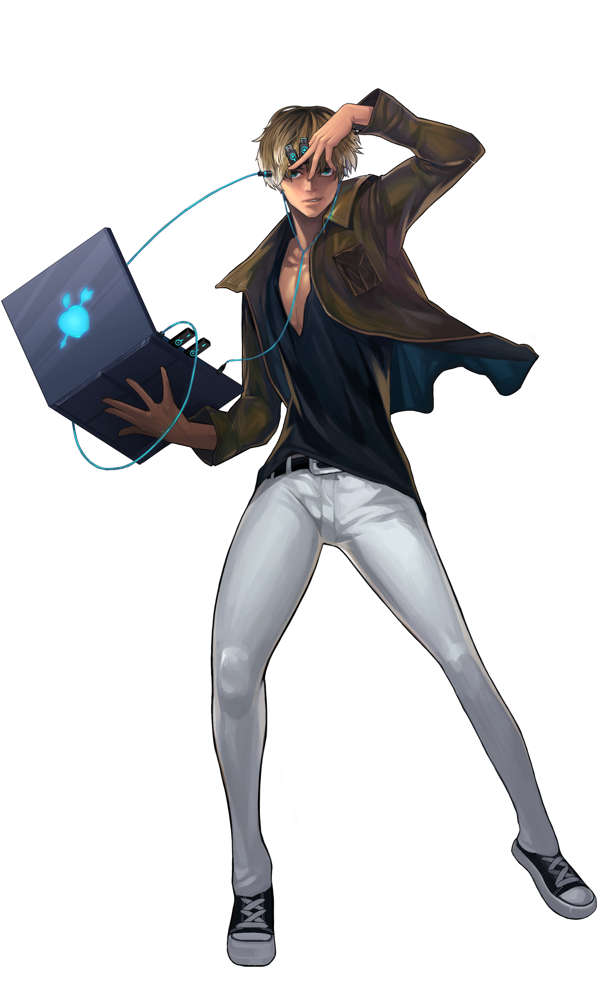
【14M-RFT08】JP
「Esta rede será o caminho para minha salvação e sua queda.」
【Ocupação】Hacker
Ele gosta de usar o apelido porque acha que seu nome é rústico. JP tenta ficar longe do caminho certo por causa de sua natureza inflexível.
Como ele é um desistente do ensino médio, ele ganha a vida vendendo informações pessoais de hackers de todos os tipos de sites.
Ele às vezes tenta uma moda e pose esotérica, desenvolvendo seu próprio gosto pela moda.
Seus ossos frágeis são subprodutos de seu amor por cola.

【21M-RFT49】LAURA
「Posso levar isso? Awh... Estou brincando!」
【Ocupação】Ladra Fantasma
Um ladrão notório. Os rumores dizem que não havia nada que ela não pudesse roubar e nenhum sistema de segurança que pudesse detê-la. Ela gosta de itens luxuosos de alto valor e secretamente gosta de pegar pessoas desprevenidas. A polícia lançou operações maciças para pegá-la, mas ela frustrou todas as tentativas da polícia sem nenhuma dificuldade.
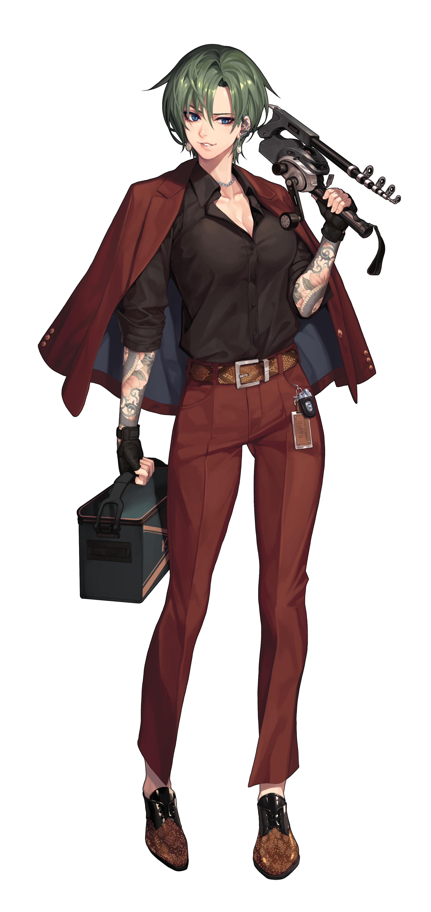
【17M-RFT32】LENOX
「Você não gosta de pescar? Acalma sua mente.」
【Ocupação】Pescadora
Ela está sempre vestida até os nove. É óbvio que ela costumava ser profissional de algum trabalho impuro.Aposto que ela acredita que está ficando discreta, pensando que uma vara de pescar é um disfarce bom o suficiente.
Uma aura de culpa e ansiedade é palpável em seu discurso e gesto.
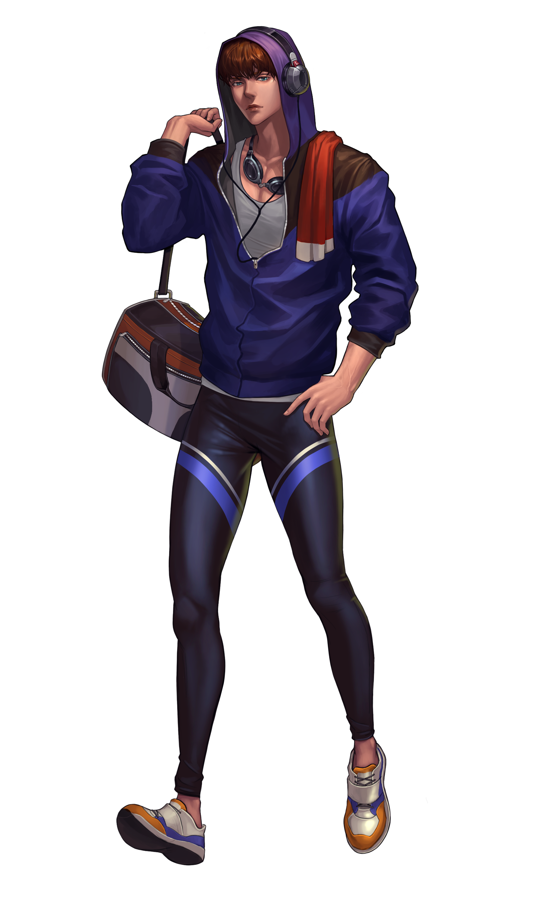
【15M-RFT17】LEON
「Fraqueza é um pecado, pago com sua vida.」
【Ocupação】Nadador
Seu pai é um soldado altamente condecorado e, como atleta, ele sempre esteve sob pressão de si e de outros para se sustentar.Ele foi ensinado a não mostrar sua fraqueza desde pequeno. Seus desejos reprimidos foram expressos através de sua obsessão material, especialmente com objetos detalhados e bonitos.
Leon está expressando esse desejo silenciosamente usando roupas íntimas fofas ou enchendo sua galeria com fotos fofas.

【16M-RFT20】LI DAILIN
「Você poderia ficar fora da minha vida?」
【Ocupação】Sem-teto
Ela era a única filha de uma família de artes marciais. Sua família escolheu seguir o caminho do domínio sobre cuidar dela. Por isso, ela abrigava sentimentos negativos em relação às artes marciais.Como um ato de vingança, ela se livrou do estúdio de artes marciais e os segredos passaram por gerações, e ela mesma escolheu viver a vida abandonando seu orgulho como artista marcial.
Quando ela fica sem dinheiro para comprar álcool, ela procura um emprego. Ela era conhecida como 'Mendigo Li' em sua cidade natal.

【18M-RFT36】
LUKE
「Seja uma casa bagunçada, lixo ou um tolo inconveniente, não deixamos nada para trás!」
【Ocupação】Zelador
Alegando ser um zelador veterano por oito anos, ele é bastante conhecido entre os bairros por sua proficiência em limpar e lidar com solicitações de outras pessoas com um sorriso.
Ele trabalha como assassino e recebe pedidos para “ limpar ” à noite. Seu trabalho diário é apenas um disfarce. Até agora, ele nunca falhou em um único pedido.
Seu pai morreu antes de ele nascer, e sua mãe morreu durante a prisão quando ele tinha 8 anos. Ele então cresceu em uma instalação e foi criado por seu pai adotivo, onde aprendeu assassinato. Ele é especialista em espadas curtas e atiradores.
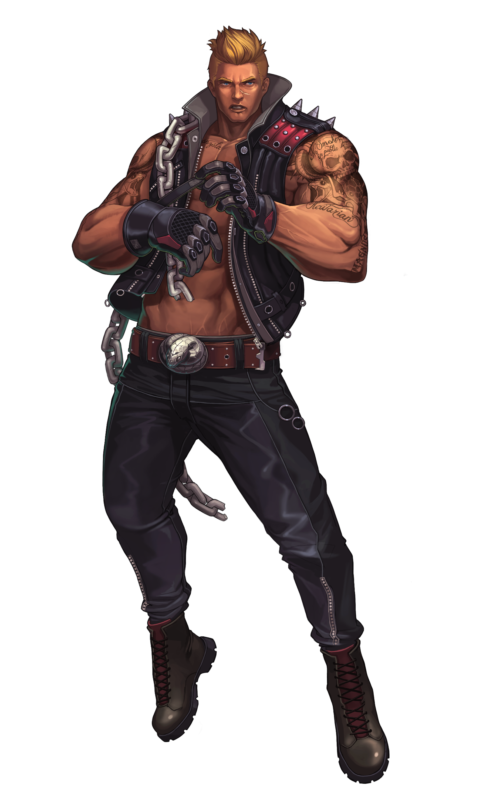
【15M-RFT18】MAGNUS
「Magnus Scott, o motociclista lendário ... sou eu.」
【Ocupação】Gangue de motociclistas
O líder da famosa gangue de motociclistas dos EUA LATHAM. Mesmo antes de se tornar o líder, o grupo era bem conhecido. Portanto, outros motociclistas constantemente os intimidavam onde quer que fossem, resultando em intermináveis brigas de gangues.Magnus sempre venceu a luta, não importa o número contra o qual ele era. Foi assim que ele se tornou a lenda viva entre os bandidos de motocicletas e o líder de LATHAM. Ele está muito orgulhoso de seu poder absoluto.
Devido à sua formação em gângster, ele é talentoso em agravar os outros. Suas palavras favoritas são: "Poder!" e "Persistência!"
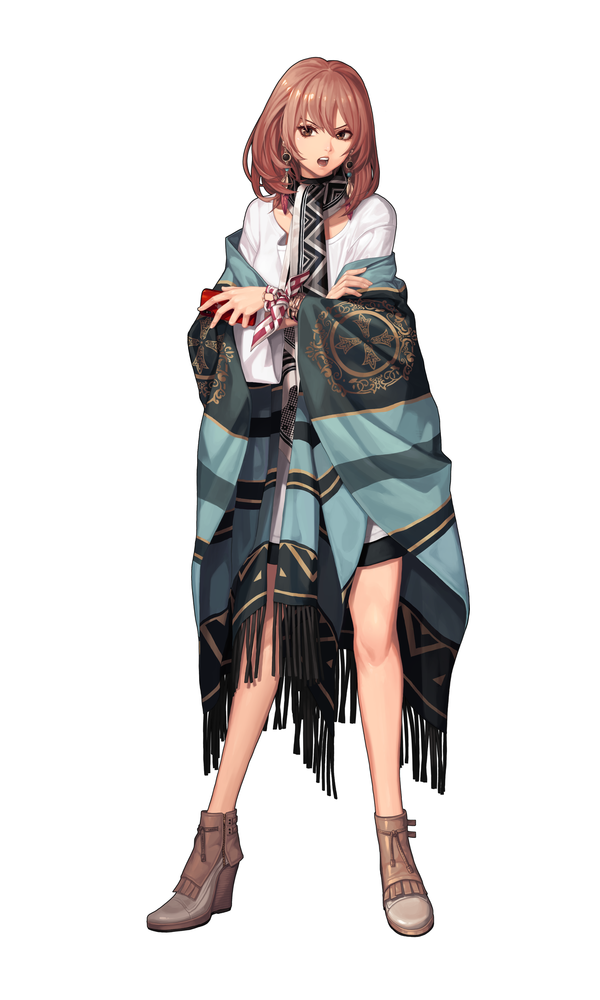
【15M-RFT18】MAI
「Eu não quero fazer isso.」
【Ocupação】Designer de moda.
O designer e CEO da David, uma marca de moda amplamente amada. Ela é um gênio quando se trata de moda, mas também é bastante egoísta.Ela odeia as coisas facilmente. Ela não tem escrúpulos em ignorar compromissos só porque sente vontade. Os que a rodeiam esperam que ela continue assim, mas quando Mai está no trabalho, ela busca a excelência.
Sua secretária tem sido parte integrante do lançamento de Mai e sua marca David em destaque.
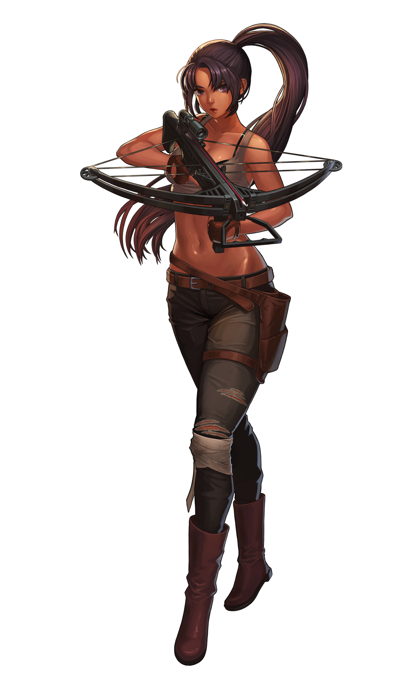
【14M-RFT10】NADINE
「Com um arco na mão, não sentirei falta.」
【Ocupação】Arqueira.
Ela perdeu os pais quando tinha 4 anos por causa de um deslizamento de terra após uma forte chuva. Ela foi a única sobrevivente do acidente e resgatada por animais selvagens a serem criados por eles. Ela foi declarada morta por 8 anos, mas mais tarde foi encontrada por um caçador e poderia começar uma nova vida como humana. No entanto, ela ainda não descobriu como viver como uma pessoa normal. Ela está sempre hesitando no que uma pessoa normal faria, mesmo nas tarefas mais triviais.Ela é claustrofóbica por causa de sua memória de quando foi enterrada na terra.
Ela analisa a paralisia, mas coloca uma atitude cínica para escondê-la.


【17M-RFT30】NATHAPON
「Todo mundo está em uma jornada para encontrar algo, não é?」
【Ocupação】fotógrafo
Ele é um fotógrafo que viaja por todo o mundo. Seu obturador nunca para.
Ele é uma pessoa naturalmente otimista e adaptável, embora outros possam soar um pouco estranhos, mas ele não é muito sociável.
Sempre que ele se levanta e abre os olhos, ele se levanta e verifica cuidadosamente as fotos na câmera, com medo de perder alguma coisa.

【14M-RFT10】NICKY
「Não me incomode! ...Ha ... tudo bem, o que houve?」
【Ocupação】dublê.
Uma dublê que tem imensa força, apesar de seu pequeno físico.Ela parece bastante adorável, mas fica furiosa quando os outros a chamam de fofa. Ela tende a agir com força, mesmo quando envergonhada, mas sua expressão facial revela tudo.
Ela pode ter maneirismos ásperos, no entanto, ela se importa com aqueles que precisam de ajuda.
Ela é ótima em reconhecer o rosto das pessoas, mas devido à sua falta de capacidade de memorizar o nome de uma pessoa, isso a levou a vários encontros embaraçosos.

【14M-RFT10】RIO
「Você não pode mentir para a minha flecha.」
【Ocupação】Estudante do ensino médio
Ela é uma estudante do ensino médio e membro do clube Kyudo de sua escola. Ela sempre fica com uma postura reta e reta quando olha para o alvo.Parece que as pessoas têm dificuldade em se aproximar e fazer amizade com ela devido à sua aparência fria, atitude composta e maneira direta e franca de falar. Mas, na realidade, ela é apenas uma estudante normal do ensino médio que não está familiarizada com ser social, adora coisas fofas e fica animada quando fala sobre seu campo de interesse favorito.
De repente, ela desapareceu quando se preparava para sua competição de Kyudo durante o último ano do ensino médio.
【14M-RFT06】ROSALIO
「Vou tirar esse olhar presunçoso do seu rosto.」
【Ocupação】Jogador de beisebol
Rosalio era jogador de beisebol em uma liga menor há três anos. Ele estava em relacionamento com a ex-namorada de seu irmão mais velho, Brit. Através da manipulação de resultados, ele ganhou muito dinheiro, mas foi pego e expulso.Ele culpa seu irmão pela expulsão e até pela queda em sua vida.
Ele gosta de animais de estimação, mas não os alimenta bem. Eventualmente, seus animais de estimação ficaram fortes como animais selvagens.
【18M-RFT37】ROZZI
「Você fez bem.」
【Ocupação】Mercenária
Desde jovem, ela foi treinada como mercenária por um grupo militante.Ela agora faz parte de uma organização mercenária chamada Corda D'arco ( Bowstring ), líder de equipe que se dedica a operações de inteligência nacional ou atende a solicitações exclusivas de empresas multinacionais. Em particular, ela tem uma reputação de excelentes habilidades de comando e tem as habilidades necessárias para criar estratégias calmas das melhores táticas em situações inesperadas.
Suas expressões faciais frias e personalidade a tornam inacessível, e ela não favorece o relacionamento próximo com ninguém, pois não há equipes permanentes durante as operações.
De fato, há um boato de que ela está procurando informações sobre seu colega de sua antiga organização

【16M-RFT23】SHOICHI
「Então, quanto vale esse trabalho sujo?」
【Ocupação】Vendedor de títulos
Ele costumava ser um trabalhador de escritório medíocre, incompetente e honesto. Quando sua esposa morreu de um defeito cardíaco congênito, todo o seu ser mudou. Como a falta de dinheiro impedia sua esposa de receber cirurgia e tratamento adequados, ele culpou o dinheiro pela morte de sua esposa. E ele percebeu que um dia, a filha que herdou a doença de sua esposa morreria da mesma doença.Deixe-o determinado a fazer qualquer coisa suja por dinheiro. Ele pode falar sobre isso com uma cara impassível, e o que realmente existe determina seu próprio valor. Ele prefere chá a café, mas acha que chá é antiquado.
【16M-RFT19】SILVIA
「Whoa, isso parece divertido!」
【Ocupação】Pilota
Ela foi criada por seu avô, na ausência de pais. Sua mãe é uma fotógrafa errante e não se sabe nada sobre o pai. Ela não valoriza muito na formação de um relacionamento. Seu foco é viver no agora.Um dos maiores motivos para ela se tornar uma motociclista, foi devido à sua emoção instantânea e sensação de corrida.
Ela é facilmente animada e age emocionalmente sem se importar com as consequências.
Ela era famosa por andar sem dar uma piada sobre as consequências.


【17M-RFT27】SISSELA
「Viver é uma dor. Há apenas mais dor esperando por mim」
【Ocupação】doente terminal
Ela sofre de uma doença incurável da qual apenas cem pessoas no mundo sofrem. Diagnosticado em uma idade jovem e não deixou o hospital desde então. Muitas vezes ela suportou dores insuportáveis e, apesar de várias tentativas de suicídio, nunca teve sucesso. A comunidade médica a considera uma amostra rara e importante, então muitas tecnologias médicas de ponta e enormes subsídios de medicamentos são usados para estudar sua condição.Mas aos olhos dela, eles só a deixaram viver aqui para usar seu corpo para pesquisa. Ela está sempre inexpressiva e não gosta de falar. Por morar em hospital desde criança, me sinto muito desconfortável em falar com outras pessoas. Ela tem o hábito de desenhar olhos e bocas nos objetos ao seu redor, dando-lhes nomes e conversando com eles.

【17M-RFT33】SUA
「Vou ler um conto de fadas para você.」
【Ocupação】Bibliotecária
Uma bibliotecária em uma biblioteca municipal que dificilmente deixaria sua mesa. Ela preencheria o turno dos outros, mesmo antes de alguém perguntar.Sua sempre fala como se ainda estivesse sonhando. Ela é uma otimista gentil e gentil de coração que nunca quebra um sorriso. Apesar de sua aparência comum, Sua é notavelmente talentosa.
Sua memória, quando se trata de literaturas e narrativas, é quase perfeita, até letras únicas e contagem de páginas. Ela usou esse presente para classificar livros com velocidade e precisão. Sua está sempre lendo alguma coisa, mesmo em dias de folga.


【21M - RFT51】TIA
「Existe ... alguma coisa que você gostaria que eu desenhasse?」
【Ocupação】Estudante universitário de arte
Ela é uma artista brilhante e genial, mas facilmente fica assustada e intimidada por pequenos assuntos.
Ela tem a capacidade de sentir emoções das cores e é capaz de transmitir aos outros através de suas pinturas. Ela é muito hábil em desenhar pinturas de natureza morta e, de alguma forma, suas pinturas parecem ser trazidas à vida literalmente.
Ela foi relatada como desaparecida quando estava pintando para crianças, e muitos assumiram que ela fugiu devido ao controle rigoroso de sua família.
【14M-RFT05】WILLIAM
「Eu não vou mais jogar bem.」
【Ocupação】Arremessador
Ele era o arremessador de alto nível da Major League Baseball.Ele estava oficialmente em um relacionamento com Brit, filha do dono da equipe, mas o relacionamento deles era frágil devido ao seu amplo relacionamento amoroso. Sua imagem foi severamente danificada quando Brit começou a namorar Rosalio logo depois que ela terminou com William.
Ele foi expulso da Major League devido à suposta manipulação de resultados. E ninguém sabia sobre o paradeiro dele por três anos.
Ele gosta de plantas, mas não as rega regularmente.
Ele é um tipo de pessoa que não faz nada que não possa assumir a responsabilidade.
【14M-RFT09】XIUKAI
「Pare de olhar, ou eu vou encher esse bolinho de massa com você.」
【Ocupação】Cozinheiro
Um cozinheiro chinês dirigindo seu próprio restaurante em Daegu, Coréia do Sul. Ele costumava ser cozinheiro de um mestre, que era um dos associados mais próximos do presidente da China. Suas conexões e riqueza eram inigualáveis. Mas depois que seu mestre foi expurgado da noite para o dia, ele escapou para a Coréia do Sul.
Ele costumava ser magro e tinha postura elegante, ele afirma... Ele é bom em se controlar, aprendeu com a experiência de servir seus ex-mestres.

【17M-RFT31】YUKI
「Há algo que eu possa fazer por você?」
【Ocupação】Estudante do ensino médio
Um estudante do ensino médio do clube Kendo com um comportamento impecável. Ele nunca perde a calma com as pequenas coisas e está sempre pronto para lidar com qualquer situação. Seu perfeccionismo é como uma parede de gelo impenetrável, mas ao mesmo tempo tão fácil de quebrar quanto vidro.【14M-RFT03】ZAHIR
「Eu contemplo a visão do Todo-Poderoso.」
【Ocupação】Seguidor religioso
Ele estava morrendo de fome e sede depois de escapar de um orfanato quando jovem. Milagrosamente, ele chegou a um pequeno templo sikh e poderia sobreviver.Desde então, ele se tornou um seguidor fiel, pois acreditava que Waheguru o salvou.
Ele lava o corpo todas as manhãs e escova o cabelo com um pente de madeira. Ele tende a falar como um adolescente ilusório, mas não é facilmente percebido como ele raramente fala.